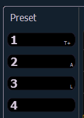

Press [Preset] twice to open the list view. You can also open the list view from the home screen or by using [Tab] + [2][6]. See Home Screen for more information.
Pressing the {Edit} softkey takes you to the blind view of the selected preset, in the last format you used in blind. This will allow you to edit the preset. You can change the blind display to spreadsheet or table view by pressing the [Format] key.
You can navigate the preset list using [Next] and [Last].
Indicators for absolute (A), locked (L), and by type (T+) display to the right of the preset number.

Note: In the by type channels column, any channel number with an asterisk indicates that the channel does not have any by type data stored to it.